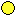
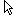

Crear
un nodo de Probabilidad
Crear
un nodo de Probabilidad
Crear un nodo de Probabilidad (en una Red Bayesiana o en un
Diagrama de Influencia) (también conocido como Nodo Probabilista)
Inténtalo ahora siguiendo los pasos que aparecen
a continuación. Cuando hayas creado tu nuevo nodo, verás su
representación gráfica en el área de red.
- Selecciona "Insertar nodos de probabilidad" en el Menú
Editar o presiona el icono

"Insertar nuevo nodo de probabilidad" de la
parte superior de la barra de herramientas.
- El ratón se convertirá en un cursor especial con la flecha y
el icono de probabilidad.
- Después, selecciona "Selección de objetos" en el Menú Editar o
presiona el icono

"Selección de objeto" de la parte superior de
la barra de herramientas.
- Presiona ahora en el nuevo nodo que has creado para
desplegar el cuadro de diálogo de las Propiedades del Nodo.
- Escribe el nombre del nuevo nodo (si no quieres el nombre
asignado por defecto).
- Puedes establecer valores para la Relevancia, Propósito, Tipo
de variable asociada al nodo (Discreta, Particionada o Continua) y
escribir un comentario en la pestaña de la sección Definición.
- Después, puedes añadir los elementos padre de este nodo (si
existen) en la pestaña de la sección Padres.
- Por último, dependiendo del tipo de variable, puedes
establecer los valores discretos o los intervalos de partición para
dicha variable.
- Presiona Aceptar para crear el nuevo nodo.